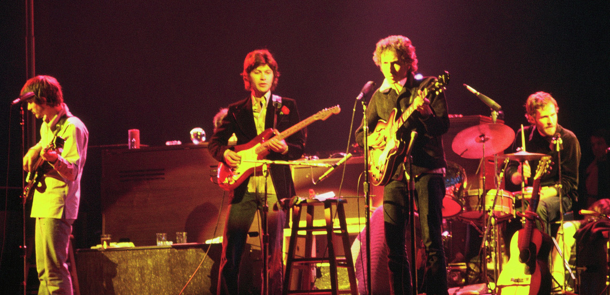

La concesión del premio Nobel de literatura de este año a Robert A. Zimmerman, Bob Dylan (Duluth, EE. UU., 1941) está generando una cierta polémica —como era previsible, por otra parte. Nadie discute que Dylan es excepcional en su arte, pero se generan dudas acerca de que su arte pueda ser calificado de literatura.
Salvador Climent
17 octubre, 2016
